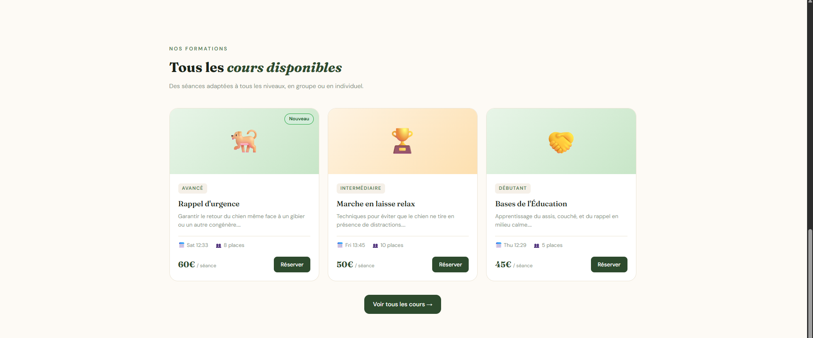
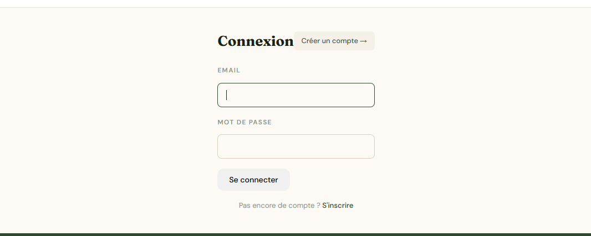
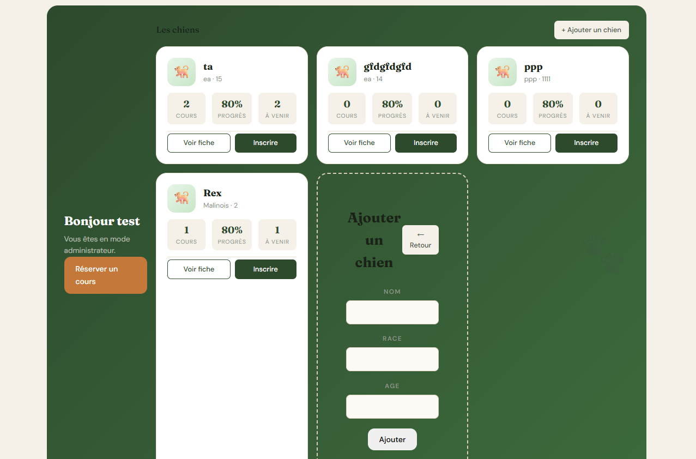

Projet CanisPro

Présentation du Projet
L'objectif de ce projet est de concevoir une plateforme web sur mesure pour le centre d'éducation canine CanisPro. Le but principal est de moderniser la gestion quotidienne en remplaçant les fichiers Excel et les dossiers au format papier par une solution digitale centralisée. Cet outil facilite grandement l'organisation des plannings, le suivi des animaux et fluidifie les échanges avec les propriétaires.
Technologies & Architecture
- Langages & Framework : Utilisation des standards HTML/CSS, couplés à PHP, SQL et au framework Symfony pour un développement robuste.
- Base de données : Conception via la méthode Merise et déploiement d'une base de données MySQL afin de gérer efficacement les profils clients, les chiens et les calendriers.
- Travail d'équipe : Gestion des versions avec Git et hébergement sur GitHub pour assurer un travail collaboratif fluide au sein de l'équipe de développement.
Interface & Fonctionnalités Clés
Catalogue des Cours
Présentation interactive des sessions d'entraînement proposées. Chaque fiche détaille les informations essentielles : niveau requis, description, prix, date et nombre de places encore libres, offrant aux utilisateurs un système de réservation simple et rapide.

Connexion & Sécurité
Un portail d'authentification sécurisé garantissant un accès personnalisé, avec des interfaces et des droits spécifiques selon qu'il s'agisse d'un client ou d'un membre de l'équipe d'administration.

Espace Personnel & Suivi
Une interface complète pour le suivi. Le tableau de bord affiche les chiens de l'utilisateur, leur progression, les cours à venir, et inclut un formulaire pour ajouter de nouveaux compagnons très facilement.
